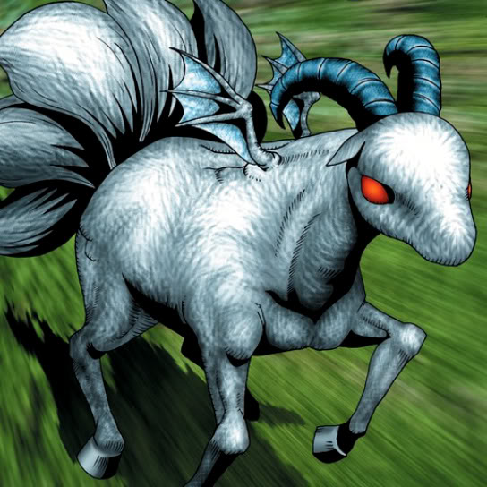

Ancient One of the Deep Forest

STATS
ATK: 1800
DEF: 1900DECK COST
Deck Cost per Card: 37Fusion List (3 Possible Fusions)
- Ancient One of the Deep Forest + Feral Imp = Chimera the Flying Mythical Beast
- Ancient One of the Deep Forest + Fusionist = Garvas
- Ancient One of the Deep Forest + Neck Hunter = Chimera the Flying Mythical Beast